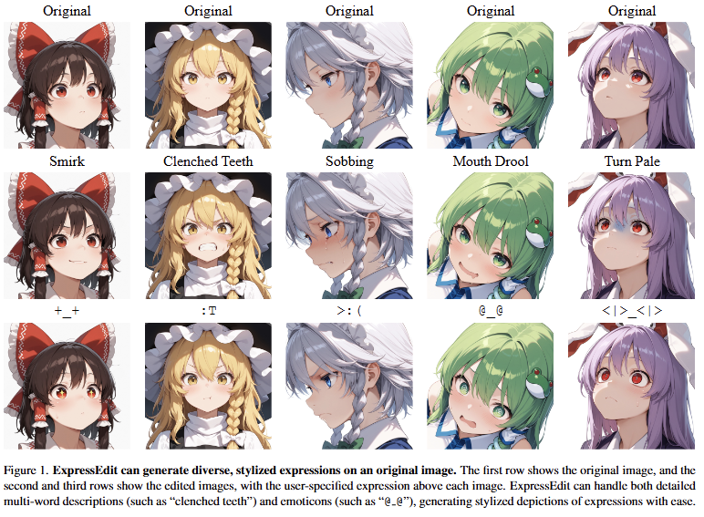
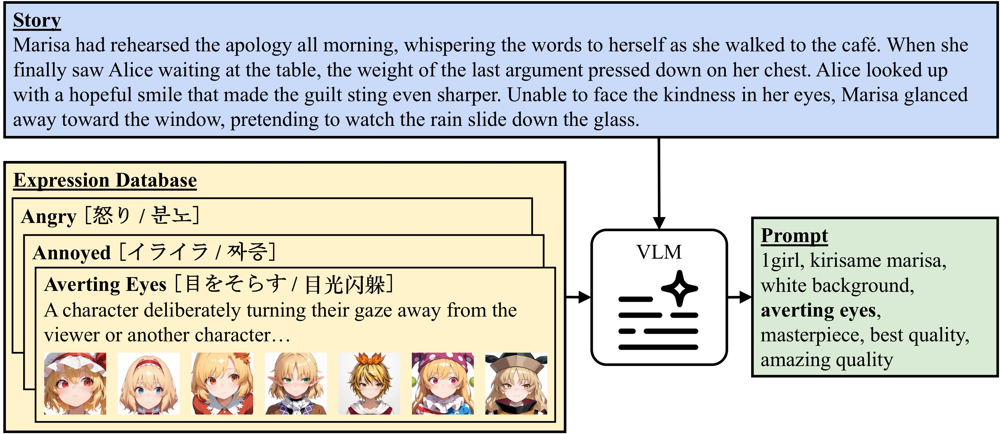
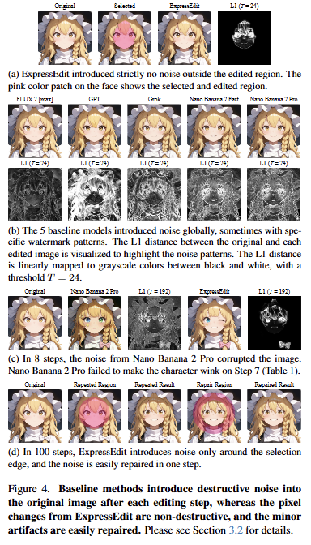
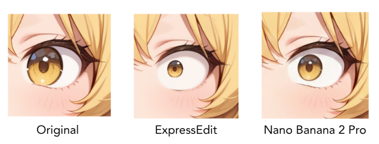
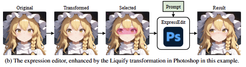

Facial expressions are essential to visual storytelling with illustrated characters. In practice, an artist revises a character's expression many times, across comic panels, storyboard frames, or variations on a design sheet. ExpressEdit makes these repeated edits fast and clean.
ExpressEdit is a free, open-source Photoshop plugin for editing stylized facial expressions, powered by the SPICE diffusion backend and a database of 135 expression tags. It runs inside Photoshop, so edits combine the precision of native tools with the flexibility of a diffusion model.

ExpressEdit generates diverse stylized expressions from both multi-word descriptions and emoticons.
The plugin uses a tag-based prompt format, which is unfamiliar to many new users. To lower this barrier, we built a database of 135 curated Danbooru expression tags, each with a definition, alternative tags in Japanese, Chinese, and Korean, example images, and example stories in four languages.
An automatic tag selector retrieves the best tag for any story description, so users do not need to memorize the tags. Try it in the RAG demo.

The selector converts a story into an expression tag, which is inserted into the prompt for the plugin.
Most AI editing models introduce noise across the entire image, even outside the region being edited. Because editing is iterative, this noise accumulates with each step until the image is no longer usable. ExpressEdit modifies only the selected region and leaves the rest of the image unchanged. Even under a stress test of 100 repeated edits, artifacts appear only at the selection edge and can be removed in a single step.

Baseline models introduce destructive noise after each edit. ExpressEdit remains clean across many iterations.
Diffusion models follow text prompts but cannot make precise numerical edits, such as reducing iris size by exactly 50%. Because ExpressEdit runs inside Photoshop, you can use native tools as direct hints to the model: scale an element to resize it, liquify it to move it, paint a rough shape with a brush, or sketch a correction. The diffusion backend then renders a clean result from these hints, while a Canny ControlNet preserves contours and saturation.

Reducing iris diameter by 50% and preserving sharp contours. Baseline models fail on these tasks.
Editing a character rarely takes a single step. An artist might fix the eyes, then the hair, then the mouth, repeating the cycle many times. When each edit takes 40 seconds, this quickly becomes impractical. ExpressEdit completes each edit in 2 to 4 seconds on a single consumer GPU, far faster than proprietary models and without any API cost.
| Method | Latency (seconds) |
|---|---|
| FLUX.2 [max] | 49.94 ± 13.39 |
| GPT | 46.01 ± 11.74 |
| Nano Banana 2 Pro | 41.92 ± 22.08 |
| Nano Banana 2 Fast | 23.18 ± 3.92 |
| Grok | 7.11 ± 0.50 |
| ExpressEdit (30 steps) | 4.06 ± 0.02 |
| ExpressEdit + Speed-Up LoRA (8 steps) | 2.18 ± 0.02 |
Single NVIDIA RTX 4090, 1024x1024 images, mean ± std over 10 runs. A speed-up LoRA cuts latency by 46% with negligible quality loss, though full 30-step denoising is recommended for final detail.

Original image, optional transformation, selection, and generated result.
For installation and setup, see the GitHub repository.
ExpressEdit can be used in these applications:
@article{tang2026expressedit, title = {ExpressEdit: Fast Editing of Stylized Facial Expressions with Diffusion Models in Photoshop}, author = {Tang, Kenan and Guo, Jiasheng and Lin, Jeffrey and Qin, Yao}, journal = {arXiv preprint arXiv:2604.03448}, year = {2026} }